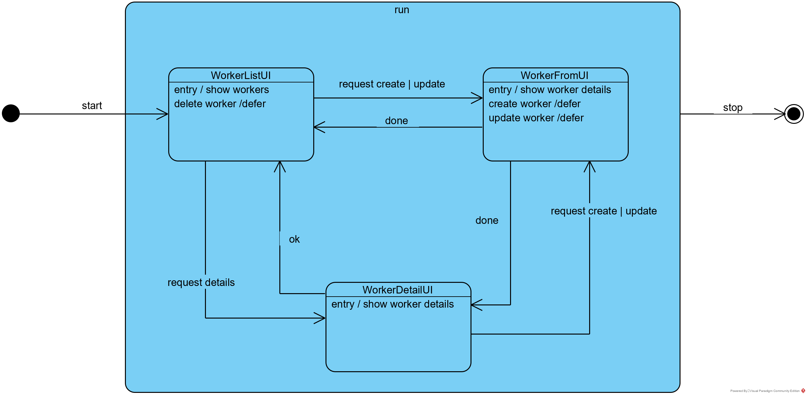

Savoir réaliser un modèle de classes d'implémentation
Après cette leçon, l'étudiant saura
ce qu'est le modèle de classes d'implémentation
utiliser les différents diagrammes du modèles de classes techniques
Durée estimée : 6 heures.
Type d'enseignement : ex-cathédra & démo & discussions.
Introduction
Le modèle de classes d'implémentation est la modélisation des classes qui seront codées.
Il s'agit donc de décomposer l'application en différentes classes,
de montrer leurs relations
et comment elles interragissent
pour réaliser les fonctionnalités décrites dans les use cases.
domain model
Attention, modèle de classes est très différent du modèle du domaine,
bien que ce dernier est aussi illustré par des classes.
La
leçon 4 - modèle du domaine
décrit la domaine à l'aide d'un diagramme de classes.
Mais l'objectif n'est pas de décrire les classes à programmer,
mais bien de décrire le domaine,
c'est-à-dire décrire les concepts utilisés par le métier.
Par exemple,
le diagramme de classes ci-dessous décrit les concepts manipulés par la demande de congés:
Il y a de nombreuses manières de décomposer le système
mais les bonnes pratiques ont mis en évidence
deux techniques de décomposition
qui seront appliquées en parallèle:
la décomposition par responsabilités,
par exemple l'architecture en couches (layers)
Nous appliquerons les principes de kernel/core (coeur)
et plugin pour établir le design de notre application.
Responsabilités
BCE
Nous basons notre décomposition sur le modèle
BCE,
Boundary, Control et Entity de Ivar Jacobson
que nous simplifions et auquel nous ajoutons le concept de plugin.
Le package Boundary est la frontière de l'application,
il a pour responsabilité de communiquer avec les acteurs.
Le package Control est le coeur de l'application,
il a pour responsabilité d'implémenter la logique de l'application.
Attention que Control est très différent du Controller
des patterns MVC ou MVP.
Control pourrait être appelé Interactor
ou Orchestrator ou AppLogic.
Le package Entity contient les classes
qui structurent les données manipulées par l'application.
Notons que cette représentation ne sera pas utilisée dans le cours.
DDC
Faisons maintenant une rapide analyse de l'application demande de congés,
et appliquons les règles suivantes:
les classes du modèle du domaine sont toutes recopiées et placées dans le package entity
nous analysons la navigation dans l'application
et nous en déduisons les fenêtres de l'application
et nous créons une classe de type boundary par fenêtre
nous créons une classe de type control
par sous domaine:
DayOffListUI, la classe qui implémente la page qui liste les jours de congé
DayOffFormUI, la classe qui implémente la page utilisée pour créer ou modifier un jour de congé
DayOffApprobationUI, la classe qui implémente la page pour approuver un jour de congé
WorkerListUI, la classe qui implémente la page qui liste les travailleurs
WorkerFormUI, la classe qui implémente le formulaire pour créer ou modifier un travailleur
DayOffControl, la classe qui implémente la logique applicative du sous-domaine "day-off"
WorkerControl, la classe qui implémente la logique applicative du sous-domaine worker
DayOffCategory, la classe qui implémente la notion métier "catégorie de jours de congés"
DayOff, la classe qui implémente la notion métier "jours de congés"
Worker, la classe qui implémente la notion métier "travailleur"
Manager, la classe qui implémente la notion métier "manager"
BCE simplifié
bounday --- entity
Nous simplifions le modèle BCE en supprimant la contrainte qui dit
que les classes du package boundary ne peuvent pas interagir avec les classes du package entity,
nous obtenons:
Nous enlevons cette contrainte,
car dans des applications simples,
elle n'est pas nécessaire
et parce qu'elle rend le modèle nettement plus complexe et difficile à apprendre.
Par contre,
cette contrainte est une bonne pratique
et elle devrait être appliqué pour tout projet de taille,
par exemple, la demande de congés est un projet
où cette contrainte devrait être appliquée.
dao
Ensuite, nous ajoutons le package dao
qui est responsable de communiquer avec la database,
c'est-à-dire seul les classes du package dao accèdent à la database.
Nous obtenons:
Nous avons ajouté l'acteur user
et l'élément database pour rendre le diagramme plus lisible,
cependant ils ne devraient pas apparaître
car il s'agit d'un diagramme de classes.
app
Finalement, nous ajoutons un package app
qui a pour responsabilité de démarrer l'application.
Finalement, nous avons dégagé le coeur de notre application,
composé des packages control et entity,
ensemble ils implémentent la logique de l'application.
A ce coeur, viennent se greffer des plugins,
comme boudary, dao et app.
Le coeur ne connaît rien des plugins,
nous pouvons l'écrire sans savoir
quelle interface utilisateur nous allons utiliser,
fenêtre, page web, mobile, console, ...
Le coeur ne connaît rien de la database
et il ne préoccupe pas de
comment l'application est démarrée.
control
recette
Maintenant que nous avons établi notre design,
nous allons chercher à définir les méthodes
de chacune de nos classes.
Nous commençons cette analyse par les classes de type control,
car il existe une méthode permettant de déterminer les méthodes de ces classes
sur base des use cases, soit:
listons les use cases
associons chaque use case à un control
ajoutons une méthode à ce control dont:
le nom est un verbe suivant éventuellement d'un nom
le nom décrit ce que fait la méthode
les arguments explicitent l'information que l'utilisateur doit transmettre au système dans ce use case
la valeur de retour explicite l'information que le système renvoie à l'utilisateur dans ce use case
Bien sûr, ceci est une recette de base
qui doit être adaptée suivant les situation,
par exemple un use case peut faire intervenir plusieurs control.
worker
Prenons l'exemple de l'application worker
et imaginons que nous avons cinq use cases:
Remarquons que nous avons ajouté l'attribut id à la classe Worker,
car nous aurons besoin d'identifier de manière univoque un travail
Cet id sera souvent le même que celui utiliser par la database.
Finalement,
le package control n'est qu'une projection des use case
sur des classes et leurs méthodes.
CRUD
Notons que l'exemple ci-dessus est très classique
et correspond aux opérations de base effectuées sur une database.
Ces opérations sont appelées CRUD,
pour CREATE READ UPDATE DELETE.
Nous les retrouvons dans de nombreuses applications informatiques.
dao
recette
Les classes de type dao sont des services rendus aux classes control et entity
pour rentre les classes entity persistantes.
La méthode consiste à:
lister les requêtes SQL nécessaires pour chaque méthodes des classes control
regrouper les requêtes par table principale
créer une classe dao par groupe de requêtes
créer une méthode par requête
exemple worker
L'exemple worker est un peu trop simple,
car il ne fait appel qu'à une seule table
et dès lors nous n'aurons pas de regroupement.
La correspondance entre les méthodes de la classe WorkerControl
et les requêtes SQL sont
fetchWorkers(): List<Worker> =>
SELECT * FROM worker
getWorker(workerId: int): Worker =>
SELECT * FROM worker WHERE id = 1
createWorker(worker: Worker): void =>
INSERT INTO worker (matricule, firstname, lastname, email, phone) VALUES ('MA1', 'Mathilde', 'Roi', 'ma@roi.be', '111')
updateWorker(worker: Worker): void =>
UPDATE worker SET matricule='PH1', firstname='Philippe', lastname='Roi', email='ph@roi.be', phone='222' WHERE id = 2
deleteWorker(workerId): void =>
SELECT FROM worker WHERE id = 3
Nous avons donc une seule classe, WorkerDao
et elle a les méthodes suivantes:
Pour déterminer les classes de type boundary,
nous devons préciser les détails de la communication entre l'acteur et le système.
S'il s'agit d'un UI (User Interface),
nous devons faire le diagramme de navigation de l'application,
qui mettra en évidence les différentes fenêtres
et pour chaque fenêtre, nous créons une classe.
worker
Dans l'exemple worker,
nous détectons trois fenêtres:
WorkerListUI affiche la liste des travailleurs
WorkerFromUI est le formulaire pour créer ou modifier un utilisateur
WorkerDetailUI affiche tous les détails d'un utilisateur

Illustration de la navigation à l'aide d'un diagramme de classe
Le diagramme liste aussi toutes les opérations possibles
à partir de chaque fenêtre:
fenêtre
transitions
description
WorkerListUI
delete worker
supprime un travaileur
WorkerListUI
request create (worker)
change de fenêtre => WorkerFormUI
WorkerListUI
request update (worker)
change de fenêtre => WorkerFormUI
WorkerListUI
request details (worker)
change de fenêtre => WorkerDetailUI
WorkerFormUI
create worker
crée un travailleur
WorkerFormUI
update worker
met à jour un travailleur
WorkerFormUI
done
change de fenêtre => WorkerListUI ou WorkerDetailUI
WorkerDetailUI
request create (worker)
change de fenêtre => WorkerFormUI
WorkerDetailUI
request update (worker)
change de fenêtre => WorkerFormUI
WorkerDetailUI
ok
change de fenêtre => WorkerListUI
Nous pouvons maintenant mettre à jour notre diagramme de classes:
La classe App est responsable du démarrage de l'application,
et plus généralement de la gestion de l'application.
Le démarrage consite bien souvent en:
instancier les classes boundary, control et dao
associer ces classes entre elles (comme sur le schéma)
démarrer la boucle "infinie" de l'application en attente d'événements en provenance des acteurs
La manière d'instancier les différentes classes dépendra des détails de l'implémentation de l'application
et l'analyse qui suit est réalisée pour une application java de type console (en mode texte).
pourrait avoir d'autres responsabilités,
par exemple contrôler si application fonctionne correctement,
permettre des mises à jour de l'application,
enregistrer des informations relatives aux performances de l'application,
permettre l'arrêt à distance de l'application,
bref, un ensemble de fonctionnalités techniques,
qui ne relèvent pas du domaine métier.
Annexes
MVC
Le MVC (Model View Controller) est pattern pour le design de nos classes.
Il y a en fait plusieurs versions du MVC,
depuis sa création dans les années 1970 et aujourd'hui.
En 1970, il s'agit d'un pattern pour réaliser des composants de l'interface utilisateur,
un bouton, une liste box, une zone de texte ...
Aujourd'hui, le MVC est façon d'organiser l'interface utilisateur.
BCE
Ruby Midwest 2011 - Keynote: Architecture the Lost Years by Robert Martin
,
Robert Martin décrit le modèle BCE avec style et précision.
Notons que Robert considère que les Boundary sont des interfaces
alors que la plupart des autres auteurs les considèrent comme des classes.
Dans le cours, nous avons simplifié le modèle.


{kind=link}
{kind=link}
{kind=link}
{kind=link}
{kind=link}
{kind=link}
{kind=link}
{kind=link}
{kind=link}
{kind=link}
{kind=link}
{kind=link}
{kind=link}
{kind=link}
{kind=link}
{kind=link}
geeksforgeeks - MVC Design Pattern